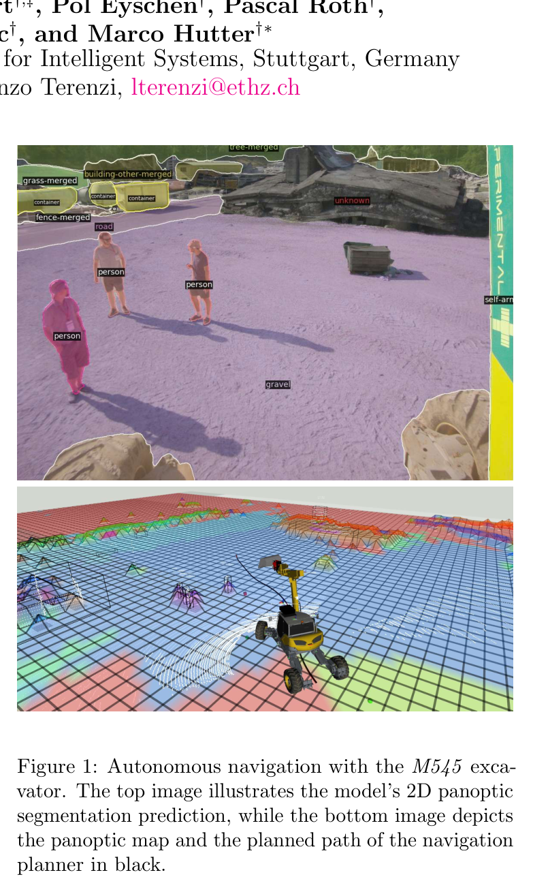
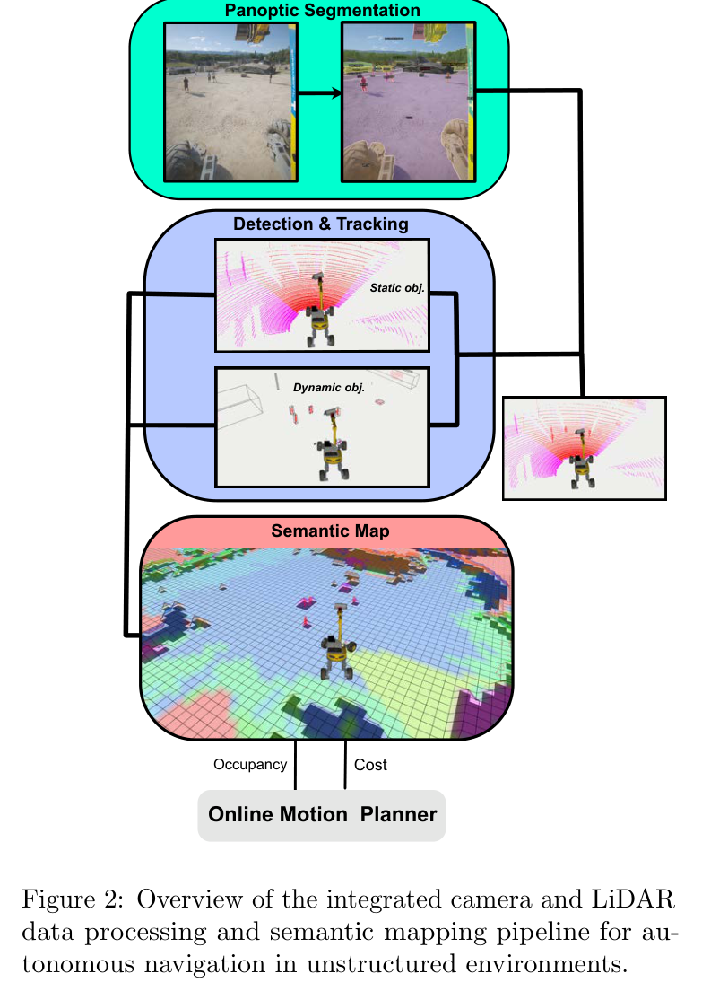
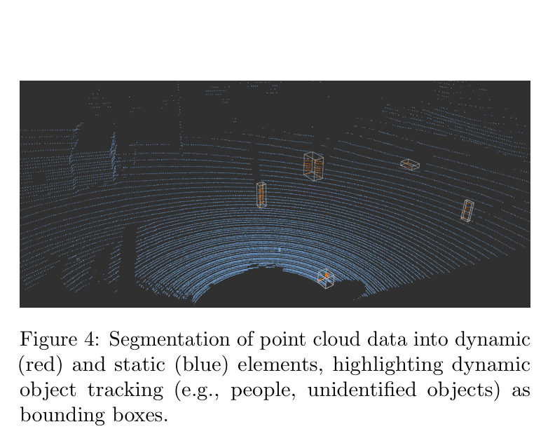
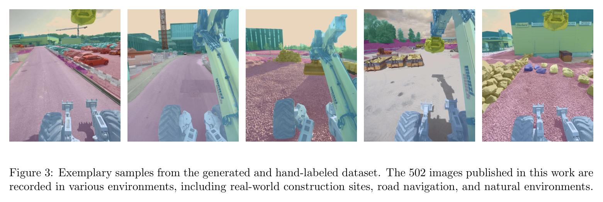
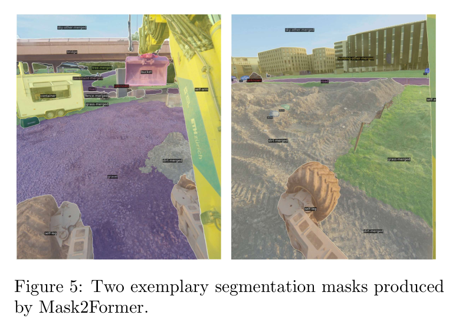
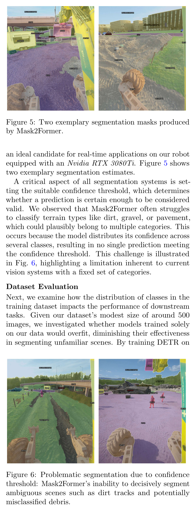
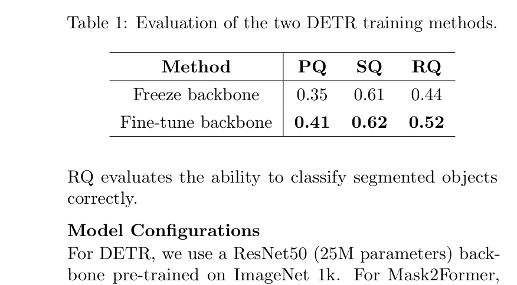
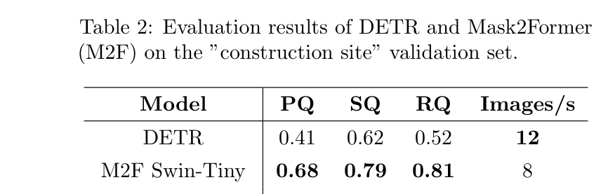
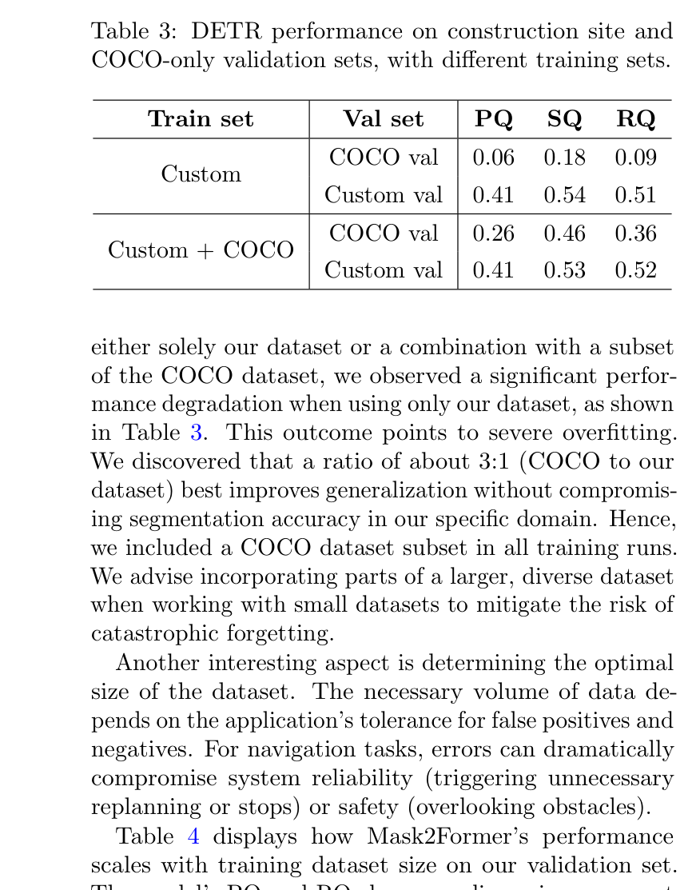
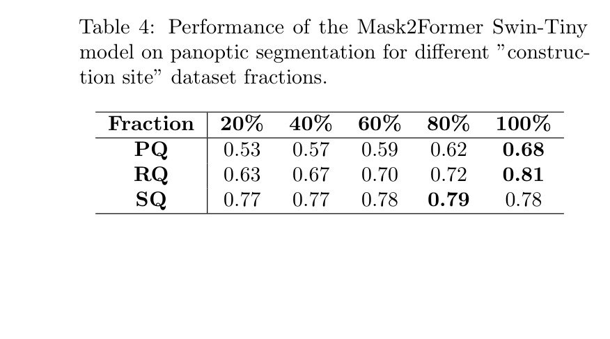

ETHcavation: Mapping and navigation for autonomous excavators in dynamic construction environments
한줄 요약 — ETHcavation은 카메라 panoptic 분할, LiDAR 군집화와 상수속도 Kalman 추적, 정적·동적 의미지도, 1 Hz RRT*를 한 파이프라인으로 묶어 사람·차량·협소 장애물이 공존하는 건설현장에서 12톤급 굴착기의 경로를 갱신하고 충돌 임박 시 정지·우회하는 통합 시스템이다.
1.연구 배경 및 동기
동적 건설현장에서 의미 이해와 주행 계획을 하나의 폐루프로 연결
건설현장은 포장도로와 달리 흙·자갈·잔해·가설울타리·작업차량·사람이 함께 존재하고, 지형과 객체 배치도 공정에 따라 계속 바뀐다. 굴착기는 차체가 크고 사각지대가 넓어 단순 점유지도만으로는 통과 가능한 흙더미와 반드시 피해야 하는 사람을 구분하기 어렵다. 논문은 이 문제를 ‘장면을 픽셀 수준으로 의미 있게 분할하는 일’, ‘그 의미를 3차원 점군과 시간축에서 유지하는 일’, ‘의미와 운동 상태를 실제 경로 비용으로 바꾸는 일’의 연쇄로 정의한다. 따라서 인식 점수만 높이는 데 그치지 않고, 지도 갱신과 충돌 회피가 실제 굴착기에서 계속 돌아가야 한다는 시스템 관점을 취한다.
기존 자율 굴착 연구는 주로 작업영역이 통제된 정적 환경을 가정하거나, 장애물을 기하학적 점유물로만 취급했다. 반면 일반 도로용 데이터와 네트워크는 건설장비, 버킷, 펜스, 비정형 흙 표면 같은 현장 범주를 충분히 학습하지 못한다. ETHcavation은 502장의 현장 영상을 직접 주석하고 COCO 데이터와 혼합해 이러한 도메인 간극을 줄인다. 이어 카메라 결과를 LiDAR에 투영하고, 정적층과 동적층을 분리한 의미 GridMap을 구성하며, 사람이 움직일 때 미래 위치까지 고려하는 온라인 RRT*로 연결한다. 이 때문에 논문의 핵심 성과는 새 데이터셋 자체보다 ‘현장 특화 인식이 실제 주행 의사결정까지 흘러가는 완결된 경로’에 있다.
대상 플랫폼은 ETH의 M545 보행식 굴착기이며, 센서는 수직 장착 4K Ximea xiX PCIe 카메라와 Ouster OS0 LiDAR이다. 상태 추정은 Graph-MSF가 IMU·GNSS·LiDAR 정보를 융합한다. 제안 시스템은 통제된 시험장뿐 아니라 스위스 Avully의 Rescue Troop Training Center에서도 사람의 횡단, 좁은 펜스와 기둥, 버킷, 도로 추종을 포함한 주행을 검증한다. 즉 데이터셋 평가, 실시간 계산 성능, 현장 경로 재계획을 같은 논문 안에서 다룬다.

원문 Figure 1 · PDF p.1 — Figure 1: Autonomous navigation with the M545 exca- vator. The top image illustrates the model’s 2D panoptic segmentation prediction, while the bottom image depicts the panoptic map and the planned path of the navigation planner in black.

원문 Figure 2 · PDF p.3 — Figure 2: Overview of the integrated camera and LiDAR data processing and semantic mapping pipeline for au- tonomous navigation in unstructured environments.
선행 연구의 한계
COCO 같은 범용 데이터만 사용하면 건설현장 고유 범주와 외관을 충분히 표현하지 못하며, 소규모 현장 데이터만 사용하면 일반 물체에 과적합된다.
프레임별 panoptic 분할만으로는 동일 객체의 시간적 정체성과 속도를 알 수 없어 사람·차량의 미래 위치를 경로계획에 반영하기 어렵다.
단일 점유층 지도는 한 번 관측된 동적 객체의 흔적을 남기거나, 새 동적 관측이 기존 정적 의미와 충돌할 때 우선순위를 명확히 처리하지 못한다.
기하학적 최단경로만 최적화하면 통과 가능하지만 위험도가 다른 의미 범주를 구분하지 못하고, 재계획 시간이 길면 움직이는 사람에 대응할 수 없다.
이 연구의 기여
건설현장 영상 502장과 능동적으로 선택한 현장 범주를 제공하고, COCO와 현장 데이터의 혼합 비율 및 backbone 미세조정 효과를 정량 비교한다.
panoptic mask를 LiDAR 점에 투영한 뒤 지면 제거·DBSCAN·다수결·Kalman 추적을 수행하여 정적 객체와 동적 객체의 3차원 표현을 온라인으로 분리한다.
정적 유지층과 매 주기 교체되는 동적층을 합성한 의미 GridMap을 만들고, 의미 비용과 이동거리 비용을 결합한 RRT*를 1 Hz로 실행한다.
실제 굴착기와 현장급 GPU에서 전체 파이프라인을 구동하고, 사람 횡단과 협소 장애물에서 정지·우회·경로 교체가 작동함을 보인다.
2.방법론 및 시스템 구성
입력은 동기화된 4K RGB 영상, OS0 LiDAR 점군, Graph-MSF가 추정한 굴착기 자세다. 먼저 DETR 또는 Mask2Former가 영상의 thing/stuff 범주를 panoptic mask로 만든다. LiDAR 점을 카메라 영상으로 투영해 의미 라벨을 붙이고, 시야 밖 점은 unknown으로 둔다. 지면점을 제거한 뒤 DBSCAN으로 물체 후보를 군집화하고, 군집 내부 라벨의 다수결 임계값을 통과한 범주를 그 객체의 의미로 채택한다.
객체 추적기는 3차원 bounding box의 위치와 속도를 상수속도 Kalman 모델로 갱신한다. 추적 결과는 정적 점군과 동적 점군으로 나뉘며, GridMap에는 누적 보존되는 정적층과 현재 주기의 관측으로 교체되는 동적층을 별도로 쓴다. 병합할 때 동적층이 정적층을 덮어써 사람이 이전 위치에 남거나 새 위치가 정적 장애물 뒤에 묻히는 문제를 줄인다. 각 의미 범주에 수작업 비용을 배정하고 사전 geofence와 합쳐 semantic occupancy/cost map을 만든다.
OMPL의 RRT*는 지도 위에서 차체의 충돌 없는 경로를 찾으며 거리와 의미 비용을 함께 최소화한다. 계획기는 1 Hz로 호출되고 한 주기의 최대 탐색시간은 0.95초다. 동적 객체에는 추적 속도에 따른 미래 위치를 예측해 비용을 배치하며, 새 경로의 비용이 기존 경로보다 낮을 때만 전환해 불필요한 경로 진동을 막는다. 경로 3 m 이내에 충돌 위험이 들어오면 해당 비용을 무한대로 올리고 장비를 정지시킨 뒤 다음 인식·계획 주기에서 회복한다.
처리 파이프라인
1
현장 특화 panoptic 학습
COCO 1290장과 건설현장 학습 영상 427장을 조합하고, 별도의 현장 검증 75장을 둔다. DETR는 backbone 동결 여부를 비교하며 최대 200 epoch의 3단계 학습을 수행한다. Mask2Former는 Swin Tiny·Big·Large backbone을 비교하고, 전체 현장 데이터의 20~100%만 사용할 때 성능 변화도 측정한다.
2
영상-점군 의미 융합
보정된 카메라-LiDAR 외부파라미터로 점을 영상 mask에 투영한다. 지면을 제거한 뒤 DBSCAN 군집마다 픽셀/점 라벨을 다수결하고, 확신이 낮으면 unknown을 유지한다. 이 과정은 영상의 조밀한 의미와 LiDAR의 거리·형상을 결합한다.
3
동적 객체 추적과 이중 지도
3차원 bounding box를 Kalman filter로 연계하여 위치와 속도를 얻고, 움직임 여부에 따라 정적·동적 점군으로 분리한다. 정적층은 과거 관측을 누적하지만 동적층은 매 주기 새 관측으로 대체한다. 병합 시 동적 의미를 우선하여 이동체의 최신 상태가 계획기에 전달된다.
4
의미 비용 기반 온라인 재계획
범주별 비용, 점유, geofence를 합친 지도에서 RRT*를 실행한다. 경로 길이와 semantic integral을 가중 합산하고, 사람·차량의 상수속도 예측 위치를 장애 비용으로 반영한다. 더 좋은 경로만 채택하며 임박 충돌 시 즉시 정지한다.
RRT* 후보의 기하학적 길이와 경로가 통과하는 의미 비용을 결합한다. 실험에서는 길이에 1, 의미 비용에 0.1을 주어 우회 길이와 현장 범주 위험도를 함께 절충한다.

원문 Figure 4 · PDF p.5 — Figure 4: Segmentation of point cloud data into dynamic (red) and static (blue) elements, highlighting dynamic object tracking (e.g., people, unidentified objects) as bounding boxes.
3.핵심 기술
소량 현장 데이터에 맞춘 panoptic 미세조정
건설현장 라벨만 고집하지 않고 COCO와 혼합해 일반화 성능을 보존한다. DETR의 ResNet-50 backbone을 동결했을 때보다 전체를 미세조정했을 때 PQ와 RQ가 상승했고, Mask2Former Swin Tiny는 더 큰 backbone과 동급 PQ를 유지하면서 처리속도가 높았다. 데이터 비율 실험은 20%에서도 일정 수준을 내지만, 전체 502장 규모로 갈수록 특히 recognition quality가 계속 개선됨을 보여준다.
현장 학습 427장, 현장 검증 75장, COCO 1290장을 사용한다.
학습 라벨 목록은 34개 범주로 정제되며 논문 기여 설명의 능동 선택 범주 수는 35개로 보고된다.
권장 혼합은 COCO:현장 데이터 3:1로, 현장 과적합과 일반 범주 망각 사이를 절충한다.
시간 일관성을 갖는 panoptic 3D 지도
프레임 mask를 그대로 점유격자에 쌓지 않고, 의미가 붙은 점군을 객체 단위로 군집화하고 추적한다. 상수속도 Kalman filter는 현재 위치뿐 아니라 다음 계획 주기의 예상 위치를 제공한다. 정적/동적 GridMap을 분리함으로써 건물·펜스는 보존하고 사람·차량은 최신 관측으로 교체하는 서로 다른 시간상수를 구현한다.
카메라 시야 밖 LiDAR 점은 임의의 의미를 추정하지 않고 unknown으로 둔다.
동적층이 정적층을 덮어써 이동체의 최신 관측을 우선한다.
Graph-MSF 자세 추정으로 여러 시점의 점군을 공통 지도 좌표계에 정렬한다.
의미와 동역학을 반영한 굴착기 RRT*
계획기는 단순 충돌 여부 이외에 의미 범주별 연속 비용을 적분한다. 사람처럼 반드시 멀리해야 하는 객체와 주행 가능한 노면의 차이를 한 지도에서 표현하고, 추적 속도로 움직임을 외삽한다. 0.95초 계산 예산 안에 새 후보를 만들고 비용이 개선될 때만 교체하는 정책은 1 Hz 지각 주기에서 경로가 요동하는 것을 줄인다.
RRT* 구현은 OMPL을 사용한다.
경로 3 m 이내 충돌은 무한 비용과 정지 명령을 유발한다.
사전 geofence를 의미 비용지도와 합쳐 인식되지 않은 금지영역도 유지한다.

원문 Figure 3 · PDF p.4 — Figure 3: Exemplary samples from the generated and hand-labeled dataset. The 502 images published in this work are recorded in various environments, including real-world construction sites, road navigation, and natural environments.

원문 Figure 5 · PDF p.6 — Figure 5: Two exemplary segmentation masks produced by Mask2Former.

원문 Figure 6 · PDF p.6 — Figure 6: Problematic segmentation due to confidence threshold: Mask2Former’s inability to decisively segment ambiguous scenes such as dirt tracks and potentially misclassified debris.
4.실험 결과
실험 환경·장비·데이터
플랫폼은 ETH의 M545 보행식 굴착기이며 수직 장착 4K Ximea xiX PCIe 카메라, Ouster OS0 LiDAR, IMU/GNSS를 사용한다.
학습·벤치마크는 RTX 3090에서 수행하고, 실차 온라인 추론은 RTX 3080 Ti에서 구동한다. Big/Large backbone 속도 측정은 batch size 1이다.
주행 평가는 통제 시험장과 스위스 Avully Rescue Troop Training Center의 실제 건설형 환경에서 수행한다.
실험 프로토콜
DETR backbone 동결/전체 미세조정, Mask2Former backbone 크기, 현장 데이터 사용률 20·40·60·80·100%, COCO 혼합 여부를 각각 비교한다.
동적 현장 시험에는 좁은 펜스·기둥·버킷, 도로 추종, 사람의 경로 횡단, 비상정지와 재계획 상황을 포함한다.
계획은 1 Hz, 회당 최대 0.95초로 반복하며 새 경로 비용이 낮을 때만 실행 경로를 교체한다.
원문 Figure 7 · PDF p.8 — Figure 7: Two consecutive snapshots from an ”adversarial test” of the navigation system conducted in Avully, where humans attempt to obstruct the robot by crossing its planned paths. The first column shows the system’s semantic mapping and object tracking, with different colors for the semantic classes (untraversable areas elevated). The planned path is illustrated in black. The third column offers a segmented, first-person view. The online RRT* planner dynamically generates alternative routes.
핵심 결과 해석
현장 panoptic 성능에서는 backbone 전체 미세조정의 효과가 명확하다. DETR는 backbone 동결 시 PQ 0.35, SQ 0.61, RQ 0.44였으나 전체 미세조정 후 0.41, 0.62, 0.52로 개선됐다. Mask2Former Swin Tiny는 PQ 0.68, SQ 0.79, RQ 0.81을 8 images/s로 달성해, Big의 PQ 0.63·3 images/s와 Large의 PQ 0.68·1 image/s보다 실시간 탑재 관점에서 유리했다. 파라미터도 Tiny 29M으로 Big 88M, Large 200M보다 작다.
데이터 양 실험에서 Tiny의 PQ는 현장 데이터 20%일 때 0.53에서 40% 0.57, 60% 0.59, 80% 0.62, 100% 0.68로 증가했다. RQ도 0.63에서 0.81로 커져 추가 현장 주석이 주로 객체 인식 안정성을 개선했음을 시사한다. 현장 데이터만 학습한 모델은 현장 검증 PQ 0.41을 유지하지만 COCO 검증 PQ가 0.06으로 붕괴했고, 혼합 학습은 COCO 검증 PQ를 0.26으로 회복하면서 현장 PQ 0.41을 보존했다.
실차 시험에서는 사람과 협소 장애물이 등장해도 계획기가 계속 유효한 경로를 생성했으며, 논문은 critical misclassification이 없고 planner가 항상 신뢰성 있게 동작했다고 보고한다. 간헐적 인식 실패는 다음 프레임 재평가로 회복됐다. 사람이 진행 경로를 가로지르는 대립적 시나리오에서도 3 m 안전 규칙으로 정지하고, 이동체의 새 위치가 지도에 반영되면 우회 또는 재개하는 흐름을 보였다. 다만 이 현장 결과는 충돌률이나 완주율의 표 형식 통계보다 대표 시퀀스와 운영 관찰 중심이다.
정량 결과
평가 항목
정량 결과
조건·맥락
원문 근거
DETR PQ 개선
0.35 → 0.41
ResNet-50 backbone 동결 대비 전체 미세조정
PDF p.6
Mask2Former Swin Tiny panoptic 성능
PQ 0.68, SQ 0.79, RQ 0.81
건설현장 검증 세트
PDF p.6
Swin Tiny 처리속도
8 images/s
RTX 3090, Big 3 images/s 및 Large 1 image/s와 비교
PDF p.6
현장 데이터 증가 효과
PQ 0.53 → 0.68, RQ 0.63 → 0.81
Mask2Former Tiny에서 현장 데이터 20% 대비 100%
PDF p.7
현장 전용 모델의 COCO 일반화
COCO 검증 PQ 0.06
COCO+현장 혼합 학습에서는 COCO PQ 0.26, 현장 PQ 0.41
PDF p.7
온라인 계획 주기
1 Hz, 회당 최대 0.95 s
의미 비용 RRT* 재계획 설정
PDF p.5
실패 사례와 경계조건
흙, 자갈, 포장면 사이의 시각적 경계가 모호해 범주 확신이 낮아질 수 있다.
고정된 closed-set 범주 밖의 새 장비나 현장 물체는 의미적으로 올바르게 분류하지 못한다.
간헐적 프레임 오분류는 발생했으며 다음 관측에서 회복했지만, 장기 폐색이나 지속 오분류에 대한 통계는 제시되지 않는다.
2.5D GridMap은 돌출·상하 구조와 복잡한 3차원 장애물 형상을 완전하게 보존하지 못한다.
5.한계 및 향후 연구
현재 한계
502장은 현장 전용 panoptic 데이터로 의미가 있지만 계절·조명·날씨·다른 국가 장비까지 포괄하기에는 작고, 평가도 같은 계열 현장에 집중된다.
범주별 비용이 수작업으로 정해져 실제 위험도, 분류 불확실성, 장비 동역학에 따라 자동 보정되지 않는다.
Kalman 추적의 상수속도 가정은 급정지·급회전하는 사람과 차량을 충분히 예측하지 못할 수 있다.
지도와 계획이 2.5D이며, 현장 실험 결과가 완주율·최소거리·정지 지연 같은 반복 통계보다 정성적 보고에 의존한다.
향후 연구
open-vocabulary 또는 foundation-model 기반 분할을 도입해 사전에 정의하지 않은 장비·도구·잔해를 표현한다.
신경망 기반 3차원 점군 검출·추적을 결합해 영상 시야 밖 객체와 폐색 상황의 지속성을 높인다.
완전한 3D semantic map과 굴착기 형상·가동부 swept volume을 이용해 돌출물과 상부 장애물까지 계획한다.
범주 확률과 추적 공분산을 경로 비용에 직접 넣고 다양한 날씨·공정 단계에서 반복적인 안전 통계를 수집한다.
6.한마디로 정리
핵심 방법은?
현장 panoptic 미세조정 → LiDAR 의미 투영·군집화 → Kalman 동적 추적 → 정적/동적 이중 GridMap → 의미 비용 RRT*를 연결한다.
핵심 결과는?
Swin Tiny가 PQ 0.68을 8 images/s로 달성했고, 실제 굴착기가 사람 횡단과 협소 장애물에서 1 Hz로 정지·우회·재계획했다.
한계는?
고정 범주, 수작업 의미 비용, 상수속도 추적, 2.5D 지도와 정성 중심 현장평가가 일반화와 안전보증의 한계다.
이 연구는 굴착 동작 자체보다 현장 이동과 안전 주변인식을 담당하는 상위 계층으로 연결 가치가 크다. 버킷 채움 RL이나 대규모 pit 계획기가 생성한 다음 작업 자세로 이동할 때, ETHcavation의 동적 의미지도는 사람·차량·가설물 때문에 계획을 보류하거나 우회하는 안전 게이트가 될 수 있다. 반대로 작업계획기의 geofence, dump zone, excavation zone 의미를 같은 GridMap 비용층으로 가져오면 ‘주행 가능한가’와 ‘공정상 들어가도 되는가’를 함께 판단할 수 있다.
다음 단계는 panoptic score를 단순 범주 라벨이 아니라 확률분포로 유지하고, 추적 공분산 및 제동거리와 결합하는 것이다. 그렇게 하면 사람 라벨이 일시적으로 사라졌을 때도 보수적 비용을 유지하고, 버킷·붐의 swept volume과 작업자 동선을 포함한 시공 안전계획으로 확장할 수 있다.
Towards Autonomous Excavation Planning의 전역 작업 자세 사이를 이동하는 주행 계층에 동적 사람·차량 비용을 제공할 수 있다.
RL bucket-filling의 작업영역 앞에 의미 기반 안전 감시기를 두어 사람이 접근하면 정책 실행을 중지하고 재개 조건을 관리할 수 있다.
dry-stone construction의 석재 inventory와 장비·작업자 위치를 동일한 semantic map에 표현하면 파지·운반·배치 충돌을 공동 관리할 수 있다.
open-vocabulary 3D 인식과 불확실성 비용을 결합하면 고정 34개 라벨 및 2.5D 표현의 한계를 직접 보완한다.
7.전체 그림·표
본문 핵심 위치에 배치하지 않은 원문 Figure와 Table을 원문 페이지 순서로 수록한다.

원문 Table 1 · PDF p.6 — Table 1: Evaluation of the two DETR training methods.

원문 Table 2 · PDF p.6 — Table 2: Evaluation results of DETR and Mask2Former (M2F) on the ”construction site” validation set.

원문 Table 3 · PDF p.7 — Table 3: DETR performance on construction site and COCO-only validation sets, with different training sets.

원문 Table 4 · PDF p.7 — Table 4: Performance of the Mask2Former Swin-Tiny model on panoptic segmentation for different ”construc- tion site” dataset fractions.